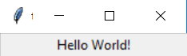
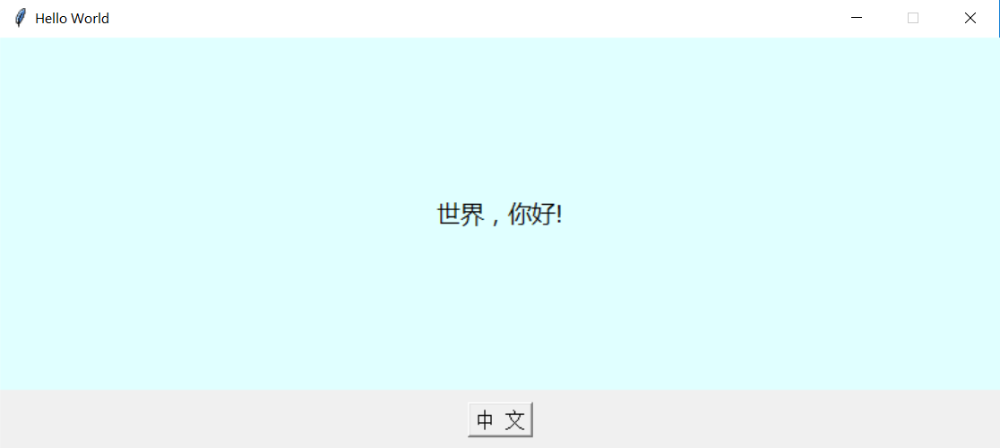

Hello World，编写一个Tkinter程序需要哪些基本步骤？
2020-10-13 by Vincent Ping | Category: 编程 | Tags: Python Tkinter GUI前文《Python自带的GUI库Tkinter是否值得学习》介绍了Tkinter库，下面我们开始使用Tkinter开发第一个GUI程序，按照惯例，编写一个Hello World程序，不过是Tkinter版本。
import tkinter
root = tkinter.Tk()
label1 = tkinter.Label(root, text="Hello World!")
label1.pack()
root.mainloop()
上面 helloworld1.py 是最精简Tkinter版本的Hello World程序，运行该程序得到如下结果：

下面我们来解读下，同时进行一些简单的优化。
总体来说，可以将Tkinter程序的开发工作分成四个步骤：
1、创建并设置根窗口
开发一个GUI程序，如同画画一样，首先我们要有画布，其他所有的工作都在该画布上展开。
Tkinter程序中的画布就是根窗口。上面程序中第二行代码
root = tkinter.Tk()
就创建了一个画布。而最后一行代码
root.mainloop()
则运行该画布所承载的整个程序。
通过上面第二行代码生成画布窗口后，我们还可以设置该窗口的一些属性，比如窗口的title，窗口的尺寸大小，窗口是否可以变化大小等。我们可以添加如下代码：
root.title("Hello World") # 设置画布窗口的title
root.geometry("800x330") # 设置画布窗口的尺寸
root.resizable(0,0) # 设置画布窗口是否能变化大小，这里设置X和Y轴都不可改变
2、选择要显示的组件（widgets）并进行对应设置
画布有了，接下来需要决定用户在程序界面上会看到哪些功能模块，比如按钮、文本输入框、多选按钮、单选按钮、进度条等等。这些模块在Tkinter中叫组件（Widgets，也有叫“控件”的），可以把它们想象成Tkinter已经准备好的模块。这些模块如同积木一样，我们要做的就是按照需求选择相应的组件，并设置每个组件的属性。
上述程序中，我们就使用了一个标签Label组件，这个label1放置在根窗口root（亦即第一步中的“画布”）上，标签上的文本为“Hello World!”。
label1 = tkinter.Label(root, text="Hello World!")
这里，我们同样可以进一步设置该标签的一些属性，比如标签的背景颜色、高度，文本的字体、大小和颜色等。
label1 = tkinter.Label(root, text="Hello World!" bg='lightcyan', height=10, fg='black',font=("微软雅黑", 14))
3、组件的布局管理
完成组件的选择后，第三步我们要调整这些组件在程序中的位置和相互关系，比如是横向排列还是纵向，当程序窗口（画布）缩放时，组件本身如何变化，相互之间位置如何变化等等。Tkinter中，这个过程叫着布局管理（geometry management）。
在上述程序中，我们使用了最直接的布局管理方法pack()：
label1.pack()
这里，pack()有一些参数可以设置，比如fill参数设置组件是否在X和Y轴方向填充空间，而expand参数则设置当组件所在窗口大小变化时，该组件是否相应扩展。
label1.pack(fill=tkinter.BOTH, expand=tkinter.YES)
到这里，我们看看先前的Hello World程序变成如下 helloworld2.py：
import tkinter
root = tkinter.Tk()
root.title("Hello World")
root.geometry("800x330")
root.resizable(0, 0)
label1 = tkinter.Label(root, text="Hello World!", bg="lightcyan", height=10, fg="black",font=("微软雅黑", 14))
label1.pack(fill=tkinter.BOTH, expand=tkinter.YES)
root.mainloop()
运行该程序，效果如下：

4、给组件编写交互功能
一个GUI程序的最大作用是我们可以和它进行交互，前面的组件的选择、设置和布局，最终都是为了让我们更好的与程序交互。
所以，在这一步，我们需要给模块和组件添加事件功能。例如，点击一个按钮时会有什么样的反应；用户选择一个单选或者多选项时，选择的内容如何保存和传递；用户通过文本框输入的数据又是如何保存和传递等等。Tkinter中，我们使用回调函数（callback）来进行事件绑定（event binding）。
后续我们会专门讨论回调函数的绑定，这里只通过给上述Hello World程序增加基本交互功能进行简单的说明。以下为 helloworld3.py ：
import tkinter
root = tkinter.Tk()
root.title("Hello World")
root.geometry("800x330")
root.resizable(0, 0)
label_text = tkinter.StringVar()
label_text.set('Hello World!')
def set_chinese():
label_text.set("世界，你好!")
label1 = tkinter.Label(root, textvariable=label_text, bg="lightcyan", height=10, fg="black",font=("微软雅黑", 14))
label1.pack(fill=tkinter.BOTH, expand=tkinter.YES)
button1 = tkinter.Button(root, text='中 文', font=("宋体", 12), command=set_chinese)
button1.pack(side=tkinter.TOP, pady=10)
root.mainloop()
这里，我们首先创建了一个Tkinter变量label_text，并设置其初始值为“Hello World!”。
label_text = tkinter.StringVar()
label_text.set('Hello World!')
同时，在创建label1时，我们使用textvariable=label_text绑定，label1的文本就是label_text变量：
label1 = tkinter.Label(root, textvariable=label_text, bg="lightcyan", height=10, fg="black",font=("微软雅黑", 14))
接着，添加一个按钮组件button1，同时设置其点击回调函数为set_chinese：
button1 = tkinter.Button(root, text='中 文', font=("宋体", 12), command=set_chinese)
回调函数set_chinese的定义为：
def set_chinese():
label_text.set("世界，你好!")
也就是，当我们点击button1时，程序会调用set_chinese函数，该函数的作用是让label_text变量设置为“世界，你好！”。
最后，我们再通过布局管理方法pack()将button1添加到画布上。
button1.pack(side=tkinter.TOP, pady=10)
运行程序，界面如下：

当我们点击按钮时，显示内容变成：

点击“中文”按钮时，文本“Hello World！”会变成“世界，你好！”。可见，这个HelloWorld程序相比前面的例子增加了简单的交互功能，这个功能是通过将回调函数set_chinese与按钮button1的点击事件进行绑定实现的。
总结一下
本文介绍了编写Tkinter程序的几个基本步骤，大致是：
- 创建并设置根窗口
- 选择要显示的组件并进行对应设置
- 组件的布局管理
- 给组件编写交互功能
同时，通过三个HelloWorld程序，分别对这些步骤进行了简单介绍。后续将会针对这些步骤，作进一步的详细介绍。
孩子运动，是选篮球还是足球？？
篮球和足球都是团体对抗的球类运动，训练方式也相似，对于提高身体素质，培养孩子的对抗意识和团队合作意识很有帮助。但是因为运动形式的差别，篮球更有利于身体的全面锻炼，对孩子长身高有帮助，同时也有利于脑部发育。
read more2020年温针灸足三里筑基记录
2018年的温针灸足三里百次筑基，对我的身体有很大帮助。今年准备再次温针灸足三里，希望经过三伏天，重新百次筑基。6月1号开始第一次，特记录如下。
read morePython自带的GUI库Tkinter是否值得学习？
Python语言可以用在很多方面，网站开发、数据分析、运营维护、游戏开发等等，那么桌面应用程序GUI呢？其实Python标准库里自带Tkinter就是干这个的。相比PyQT、wxPython等等，Tkinter有哪些优势和不足，是否值得学呢？
read more站桩记录2：调身、调气和调心
站桩的过程实际上首先就是“调身”的过程。“下紧上松”，从双脚开始，到膝盖，再到裆部的放松。上半身则要求头部顶悬、下颌微内收；松肩沉肘，双掌环抱。
read more站桩记录1：开始练习站桩
最近看了一些关于站桩的资料，同时也接触了一些师傅，请教了养生的问题，大家都比较推崇站桩。于是决定试试。
read more创意与验证：如何获得好的创意?——Udacity课程《产品设计》学习笔记2
要想有一个好的创业点子，一定要对所做的事情有激情。千万不要只是为了创业而去创业。我们之所以要创业，是因为要解决一个问题，一个会让我们日夜寻思的问题。
read moreBreeze，让无车者也能成为Uber/Lyft司机
对于Uber和Lyft这样的打车平台来说，随着对出行市场的占有率越来越高，他们面对的问题和别的行业有所不同。对于他们来说，获取用户非常简单，甚至太简单了，导致现在他们常常面临的问题是：用户太多，而司机太少。
read more创业者应该具有怎样的素质？——Udacity课程《产品设计》学习笔记1
企业家是否能够培养？这本身就是一个问题。一个企业家所扮演的角色非常广泛，除了企业内的经营管理工作，还有很多企业外的作用，所以要找到一个简单的成功公式非常困难。
read moreInstacart创业者早期的故事
故事从2010年1月说起，80后的Apoorva Mehta在亚马逊已经工作了2年，作为一个开发工程师，他在亚马逊学到了很多，但同时也开始对公司里缓慢官僚的气氛有些感到厌倦，他希望有所改变。
read more